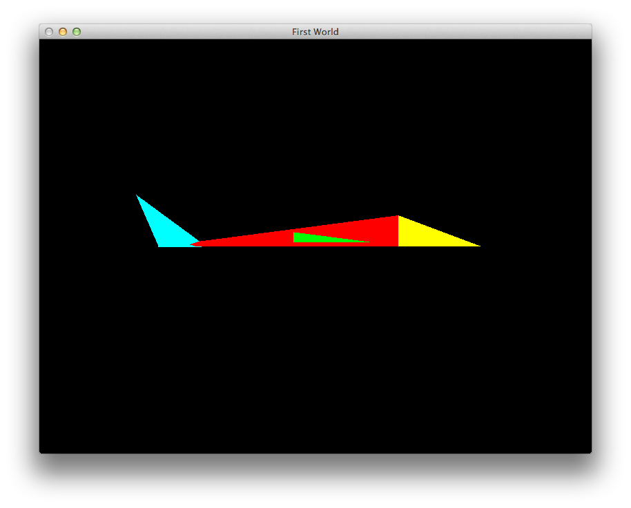
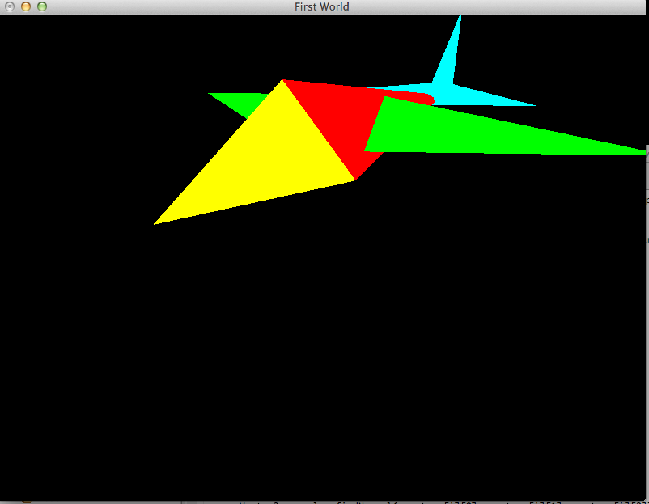

00: Objectives
-
Rework the Camera class to utilise the mouse + arrow keys
-
Create a custom actor class - which override the default behaviour in interesting ways
-
Create (as an exercise) a custom actor class whose geometry is completely loaded external to the default model
01: Setup
-
Your completed lab from last session should be used as the basis for this lab. Clone the project and call in lab09_camera_colour.
-
Alternatively, you can import the source from this archive here:
-
lab08complete.zip
02: World
-
The camera - although functional - is difficulty to use. We would like to incorporate the mouse into its controls.
-
To do this, we need to refactor the glutadapter, World and Camera classes:
-
First, glutadapter.h - introduce two new functions:
void keyboardSpecial(int key, int x, int y);
void mouseMovement(int x, int y);
void mouseMovement(int x, int y)
{
theWorld.mouseMovement(x,y);
}
void keyboardSpecial(int key, int x, int y)
{
theWorld.specialKeyPress(key, x, y);
}
- In the World class - we prototype these methods:
void specialKeyPress(int key, int x, int y);
void mouseMovement(int x, int y);
- ... and provide an initial implementation:
void World::specialKeyPress(int key, int x, int y)
{
//...
}
void World::mouseMovement(int x, int y)
{
//...
}
03: Camera
- We now refactor the Camera to take advantage of this new input capability. Relace the current definition with the following:
struct Camera
{
Camera();
void specialKeyboard (int key, int x, int y);
void mouseMovement(int x, int y);
void render();
Vector3 position;
float xrot, yrot, cRadius, lastx, lasty;
};
- ... and this implementation:
Camera::Camera()
: position(0,0,0), xrot(0), yrot(0), cRadius(5)
{
}
void Camera::render()
{
glTranslatef(0.0f, 0.0f, -cRadius);
Vector3::UnitX.rotate(xrot);
Vector3::UnitY.rotate(yrot);
glTranslated(-position.X, 0.0f, -position.Z);
}
void Camera::specialKeyboard(int key, int x, int y)
{
float xrotrad, yrotrad;
switch (key)
{
case 101: yrotrad = (yrot / 180 * GL_PI);
xrotrad = (xrot / 180 * GL_PI);
position.X += float(sin(yrotrad));
position.Z -= float(cos(yrotrad));
position.Y -= float(sin(xrotrad));
break;
case 103: yrotrad = (yrot / 180 * GL_PI);
xrotrad = (xrot / 180 * GL_PI);
position.X -= float(sin(yrotrad));
position.Z += float(cos(yrotrad));
position.Y += float(sin(xrotrad));
break;
case 102: yrotrad = (yrot / 180 * GL_PI);
position.X += float(cos(yrotrad)) * 0.2;
position.Z += float(sin(yrotrad)) * 0.2;
break;
case 100: yrotrad = (yrot / 180 * GL_PI);
position.X -= float(cos(yrotrad)) * 0.2;
position.Z -= float(sin(yrotrad)) * 0.2;
break;
}
}
void Camera::mouseMovement(int x, int y)
{
int diffx = x - lastx;
int diffy = y - lasty;
lastx = x;
lasty = y;
xrot += (float) diffy;
yrot += (float) diffx;
}
- In World, we will change how input event events are passed on to the camera object. First, remove completely the call to camera::render from keyPress:
void World::keyPress(unsigned char ch)
{
if (ch >= '1' && ch <= '4')
{
projectors.keyPress(ch);
}
glutPostRedisplay();
}
- We now operate the camera completely from specialKeyPress an mouseMovement:
void World::specialKeyPress(int key, int x, int y)
{
if (projectors.isPerspective())
{
camera.specialKeyboard(key, x, y);
}
glutPostRedisplay();
}
void World::mouseMovement(int x, int y)
{
camera.mouseMovement(x,y);
}
glutSpecialFunc(keyboardSpecial);
glutPassiveMotionFunc(::mouseMovement);
- Build and test - the camera should be operational - remember to use the mouse + arrow keys
04: Cube
- Introduce a new class call ColourCube - into the scene package:
#pragma once
#include "actor.h"
struct ColourCube: public Actor
{
ColourCube(Geometry* g);
void render();
};
#include "libs.h"
#include "colourcube.h"
#include "Color.h"
ColourCube::ColourCube(Geometry* g) : Actor(g)
{}
void ColourCube::render()
{
Actor::render();
}
-
We can identify a cube from our model - in this OBJ file here there is one called 'cube2':
-
testcube.obj
-
generated from this may file here:
-
model.mb
-
In the Scene constructor - we can identify this object, and have our ColourCube class constructed to use its geometry:
foreach (GeometryMap::value_type &value, model->entities)
{
string name = value.first;
Actor *actor;
if (name == "cube")
{
actor = new CubeActor(&value.second);
animateActors[name] = (AnimateActor*) actor;
}
else if (name == "cube2")
{
actor = new ColourCube(&value.second);
}
else
{
actor = new Actor(&value.second);
}
actors.insert(name, actor);
}
-
(Not the physics cube actor is still there from last weeks lab).
-
Build and test. There should be no change to the scene yet.
-
Just to confirm that we our code is actually having an influence, change the polygon mode to "FILL" in the ColourCube render:
void ColourCube::render()
{
glPolygonMode(GL_FRONT,GL_FILL);
Actor::render();
glPolygonMode(GL_FRONT,GL_LINE);
}
05: ColourCube
- We can completely override the default rendering, and code it ourselves:
void ColourCube::render()
{
glShadeModel(GL_FLAT);
glPolygonMode(GL_FRONT,GL_FILL);
foreach (Face &face, geometry->faces)
{
face.render(geometry->vertexGroup->vertices);
}
glPolygonMode(GL_FRONT,GL_LINE);
}
void ColourCube::render()
{
glShadeModel(GL_FLAT);
glPolygonMode(GL_FRONT,GL_FILL);
foreach (Face &face, geometry->faces)
{
glBegin(GL_QUADS);
foreach (int index, face.vertexIndices)
{
glVertex3f( geometry->vertexGroup->vertices[index-1].X,
geometry->vertexGroup->vertices[index-1].Y,
geometry->vertexGroup->vertices[index-1].Z );
}
glEnd();
}
glPolygonMode(GL_FRONT,GL_LINE);
}
- This allows some simple experiments. Introduce the following colour table into the colourcube.cpp file:
Color colours[] =
{
Color::White, Color::Yellow, Color::Red, Color::Magenta,
Color::Cyan, Color::Green, Color::Black, Color::Blue,
Color::Cyan, Color::White, Color::Magenta, Color::Blue,
Color::Green, Color::Yellow, Color::Red, Color::Black,
Color::White, Color::Cyan, Color::Green, Color::Yellow,
Color::Magenta, Color::Blue, Color::Black, Color::Red
};
- This defines a set of colours for the vertices - rework render to use this table:
void ColourCube::render()
{
glShadeModel(GL_FLAT);
glPolygonMode(GL_FRONT,GL_FILL);
int edge=0;
foreach (Face &face, geometry->faces)
{
glBegin(GL_QUADS);
foreach (int index, face.vertexIndices)
{
colours[edge].render();
glVertex3f( geometry->vertexGroup->vertices[index-1].X,
geometry->vertexGroup->vertices[index-1].Y,
geometry->vertexGroup->vertices[index-1].Z );
edge++;
}
glEnd();
}
glPolygonMode(GL_FRONT,GL_LINE);
Color::White.render();
}
-
Build and test.
-
Change polygon mode to GL_LINE - build and test.
-
Change shade model to GL_SMOOTH - build and test
-
Finally, try GL_LINE & GL_SMOOTH.
06: Exercises
Exercise 1
-
You will have seen that the camera in this lab adopts a 'third person' type perspective - and was influenced by the geometry calculations in this tutorial here:
-
http://www.swiftless.com/tutorials/opengl/camera3.html
-
Our earlier camera was influenced these one here:
-
http://www.swiftless.com/tutorials/opengl/camera.html
-
You have to code for both these camera implementations. As we did with Projections - incorporate both classes into a simple class hierarchy - and adopt some key to switch cameras -'c' say. How much of the camera implementations can be retained in a camera base class - and how much in the derived classes?
Exercise 2
-
Build another custom object - to be called "JetPlane" - here is the geometry:
-
jetplanegeomerty.h
-
When loaded, the geometry should render as follows:



- Write a class - derived from Actor - which will render this.
Exercise 3
- You will have noticed that the colour cube is out of sync - i.e. the colours do not line up to smoothly transition along the axes as expected. See if you can fix this be rearrarnging the color table. Alternatively redraw the geometry to get the colour axes aligned.